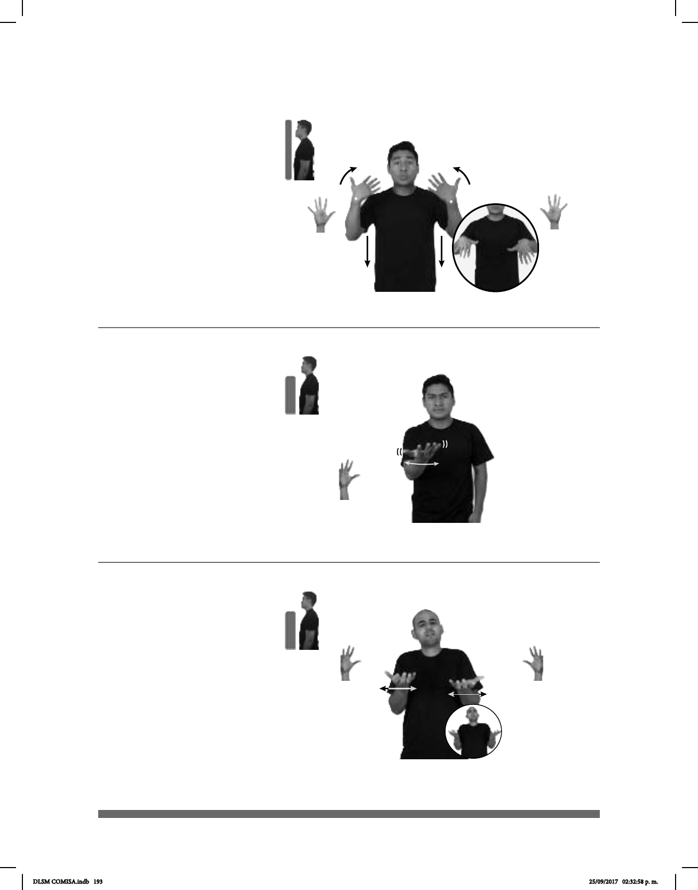

193
¿Qué hace? (A) (5-G 2)
¡Guau! – ¡Qué bárbaro! (5-G 1)
Seña: SM
5.2
Palma hacia
arriba.
A la altura del
pecho.
La mano se agita.
Interrogación por la
acción o trabajo que se realiza.
Seña: SS
5.1
Las palmas inician
hacia adentro y terminan hacia
abajo.
De los hombros al
pecho.
Recto mientras las
manos se agitan.
interj. Expresión que
indica asombro, sorpresa, gusto y
admiración.
__¡ !_ _______muy_
GUAU pos-SU TRABAJO IMPORTANTE VERDAD
¡Guau! Su trabajo es en verdad muy importante.
________o.i.p._
pro-TÚ HACER
¿Qué haces?
Seña: SS
5.2
Palmas hacia
arriba.
A la altura del
pecho.
Las manos se
agitan.
Interrogación por la
acción o trabajo que se realiza.
¿Qué hace? (B) (5-G 3)
________o.i.p._
pro-TÚ HACER
¿Qué haces?
DLSM COMISA.indb 193 25/09/2017 02:32:58 p. m.